Use Case
Let’s take the case of Hotstar (video streaming service). The more the users connected and streaming to that service, Hotstar needs more resources in terms of servers (EC2 in AWS). This way the load is distributed across different servers and leads to jitter free experience to the customers while watching the videos.
Another example is Amazon Prime Day where a lot of customers would be accessing the amazon.com site. Depending on the number of customers logging into the amazon.com site, Amazon would like to add more servers and remove the servers for better customer experience.
Both the above actions lead to increased customer satisfaction and finally to increased profits to the company. This feature of adding and removing servers is called Dynamic Scaling and is a very important property of the Cloud, which makes it unique. Users of the Cloud can scale to thousands of servers and scale down when appropriate and pay for what they use.
The same is not possible with the on-premise server where there is a fixed cost and the number of servers is also fixed. Also, during the slack time a lot of resources are under-utilized which is a wastage of CAPEX.
One way of adding and deleting the EC2 instances is to do it manually which leads to additional manual effort and expenses, may also not be accurate. Another approach is to use Auto Scaling to manage the EC2 instances automatically. Also, as Auto Scaling adds more EC2 instances the software/application installation and configuration can be automated using the AMI (Amazon Machine Images).
In the previous use case, we have seen how to capture custom metrics (number of users logged in) in the Cloud Watch. Here we would the same metric to manage (add/delete) the EC2 instances depending on the number of users logged into the website.
AWS Services: CloudWatch, Auto Scaling, EC2
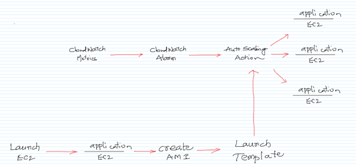
This use case is a continuation of the previous use case and we would be going with the assumption that the previous use case has been completed successfully and it’s still there to continue with this use case. If not, please complete the previous use case and come to this use case.
In the previous use case, we have seen how to capture custom metrics (number of users logged into the ecommerce application) using CloudWatch and create a dashboard out of it. In this use case we will leverage the same custom metric to spawn up additional EC2 instances automatically using EC2 AutoScalingGroups (ASG) when the metric crosses the threshold of 500 logged in users.
-- Connect to the EC2 instance and execute the “python insert-into-dynamodb.py 200”. This will update the table to 200. We don’t want to trigger the new EC2 instance immediately, so we need to have a value of less than 500 in the table.
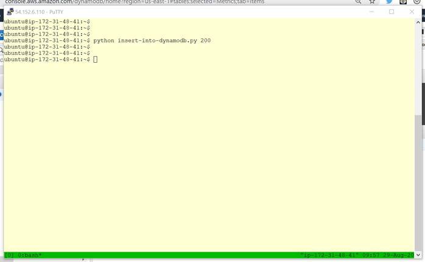
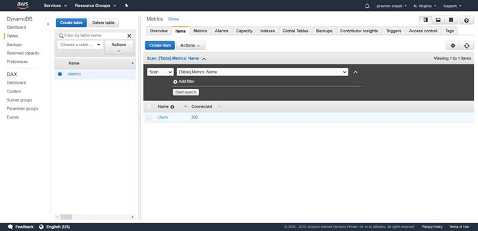
- Create and EC2 instance with the below details. We would be creating an AMI out of it, which will be used by the ASG to spun up new EC2 instances.
- Ubuntu 16.04
- t2.micro
- SecurityGroup with SSH/22 and HTTP/80 allowed
- Execute the below commands to install apache2 and create a web page.
#become a root
sudo su
#get the list of softwares
apt-get update
#install the apache2 webserver
apt-get install apache2
# start apache2
service apache2 start
#move to the default html folder
cd /var/www/html
#delete the existing index.html
rm index.html
#create a new index.html
echo "I am WS" > index.html
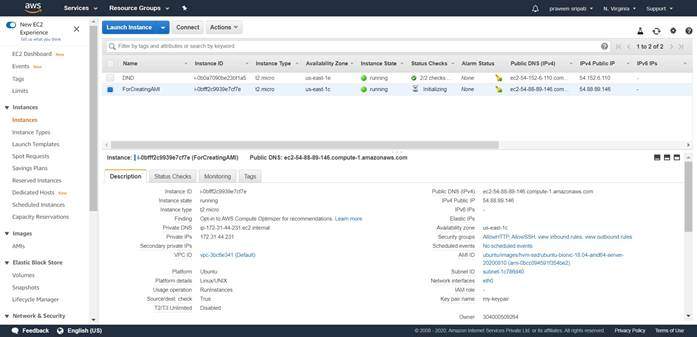
-- Access the webpage by typing the IP address of the EC2 in the browser. It should display “I am WS”, which is the content of the webpage.
-- Now let’s create an AMI out of it. Make sure to select the EC2 and go to “Actions -> Image -> Create Image”.
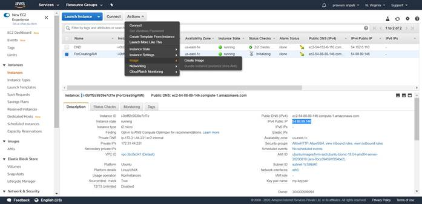
-- Enter the name of the image and some description and click on click on “Create image”. Make sure to specify the date in the name/description, makes it clear when the image was created.

-- Go to the AMI tab in the EC2 Management Console. Initially the image would be in a pending Status, within a few minutes the Status would change to available for the AMI to be used.
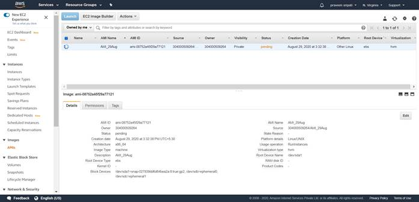
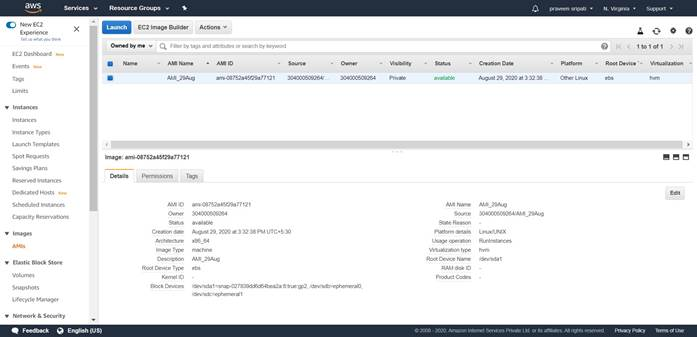
-- The EC2 which was launched for creating the AMI is no more required and so can be terminated.
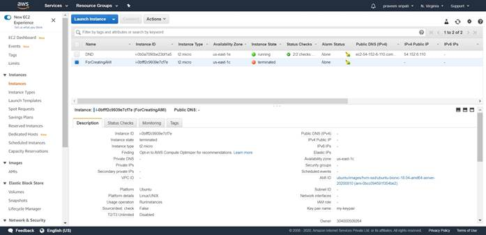
-- Go to the Launch Templates tab and click on “Create launch template”.
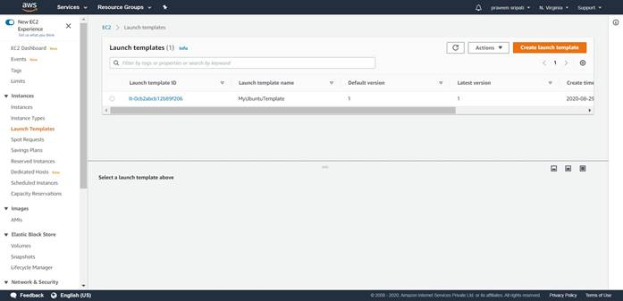
-- Specify the launch template name “MyUbuntuTemplateForASG” with some description.
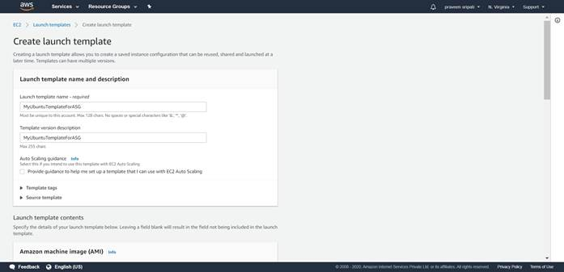
-- Select the AMI which was created in the previous step, select the instance type as t2. micro and select keypair to be used along with the EC2 instance.
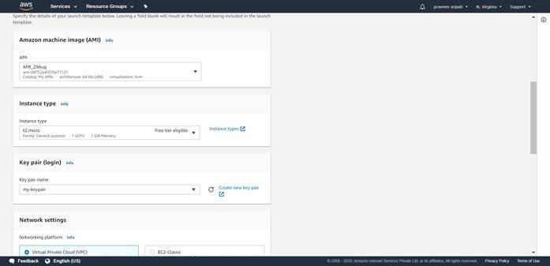
-- Under the Security groups, select the one which allow the access to the SSH/22 and HTTP/80 traffic inbound. If there are no such Security groups, create one.
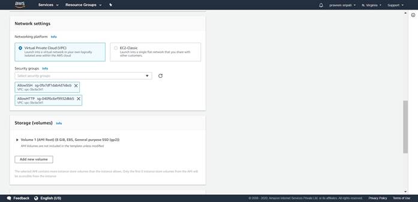
-- Go to the Advanced details and enable “Detailed CloudWatch monitoring”. This will enable for the EC2 to send the metrics to the CloudWatch every 5 minutes instead of the default 1 minute.
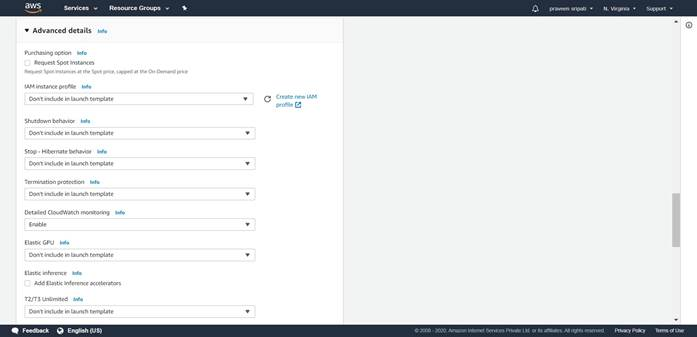
-- Click on “Create launch template” to create one which will be later used along with the ASG.
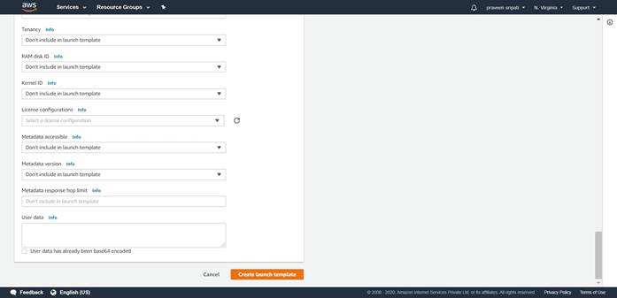
-- Go to the “Auto Scaling Groups” tab in the EC2 Management Console and click on “Create an Auto Scaling group”.
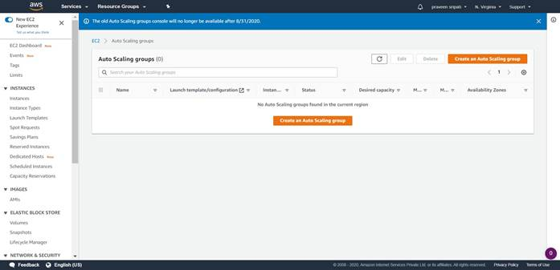
-- Give MyEcommerceAppASG” as the name, select the Launch Template which has been created in the previous step. Click on Next.
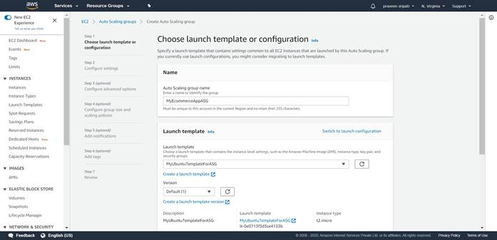
-- Select Subnet where the ASG can launch the EC2 instances. At least one subnet needs to be selected. Click on Next twice.
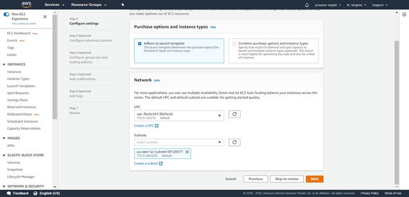
-- Specify the Desired and Minimum capacity as 1, the Maximum capacity as 4. This is range of the EC2 instances that the ASG has to stick to. Click on Next thrice.
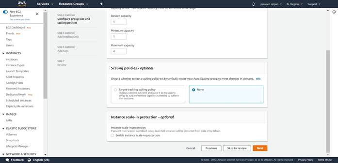
-- Review the details of the ASG and click on Create.
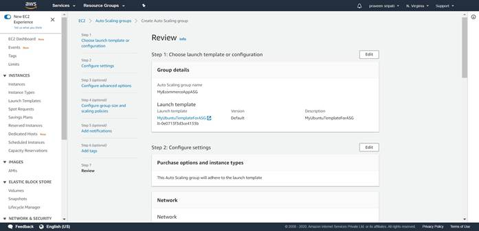
-- In the ASG, we have specified the Desired capacity as 1. So, the ASG with launch as EC2 with the details which we have specified in the Launch Template. For sake of clarity the EC2 has be named 1 in the below screen.
Grab the IP of the EC2 and type the same in the browser, it should display “I am WS”.
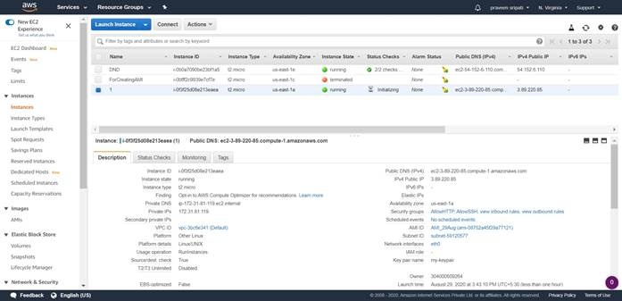
-- Let’s create an alarm for the ASG, when the alarm is breached, we can specify what action to take. Go to the CloudWatch Management Console, navigate to the Alarms tab and finally click on “Create alarm”.
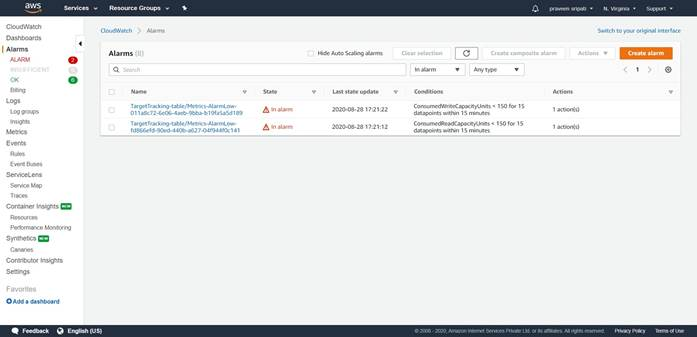
-- Click on “Select metric”.
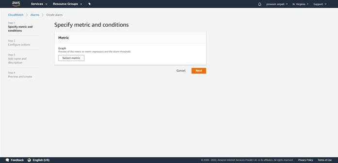
-- In the “All metrics” tab, click “MyEcommerceApp”.
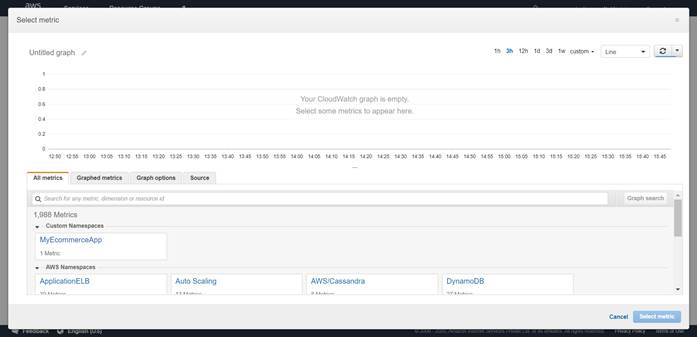
-- Click on “Metrics with no dimensions”.
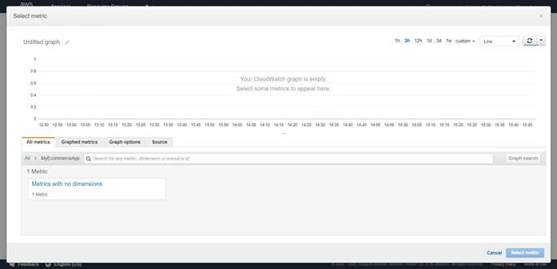
-- Select “logged-in-users” and click on “Select metric”.
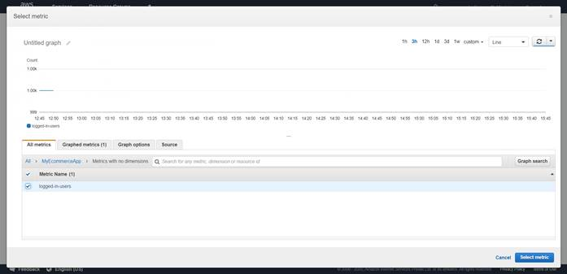
-- In the threshold value specify 500 and make sure rest of the fields are as shown in the below screen. The alarm will be breached when the metric is greater than 500. Click on Next.
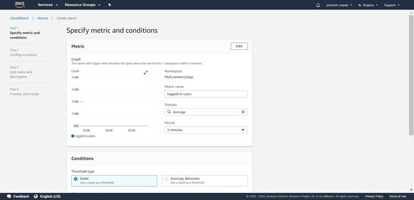

-- Click on Remove for the Notifications and click on Next.
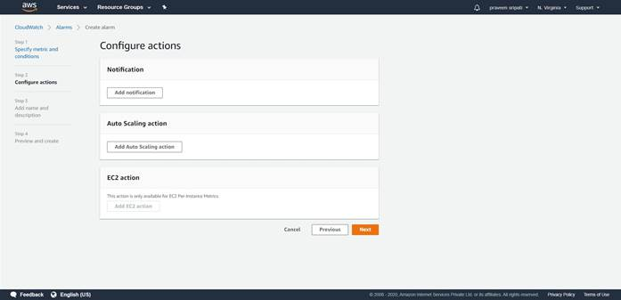
-- Give the name AppLoggedUsersCountAlarm with some description and click on Next.
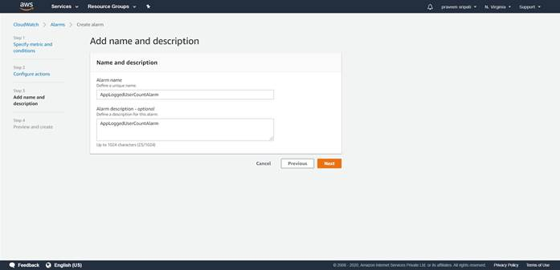
-- Review all the details of the alarm and click on “Create alarm”. The same alarm will be used later in the ASG to trigger an action.
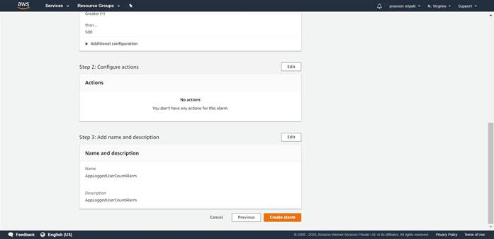
-- Initially the alarm status will say “insufficient data” as it doesn’t have
enough data to be in an OK or ALARM state. We can ignore this for now.
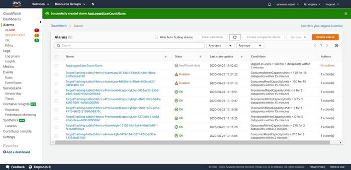
-- Go back to the ASG in the EC2 Management Console. Expand the ASG which was created earlier.
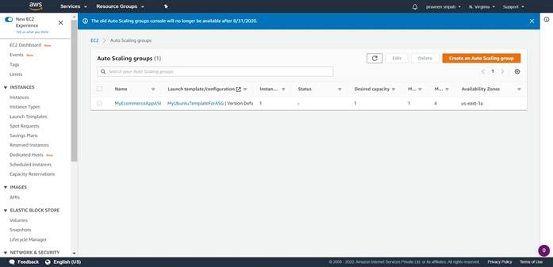
-- Go to the “Automatic scaling” tab and click on “Add policy”.
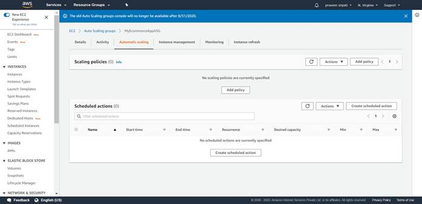
-- Select the “Simple scaling” as the policy type with ScaleUpPolicy as the name. in the “Take the action” specify the number of units to add as 1. Click on Create to update the ASG.
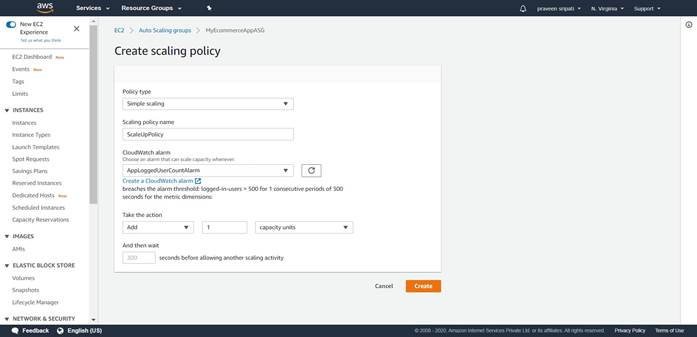
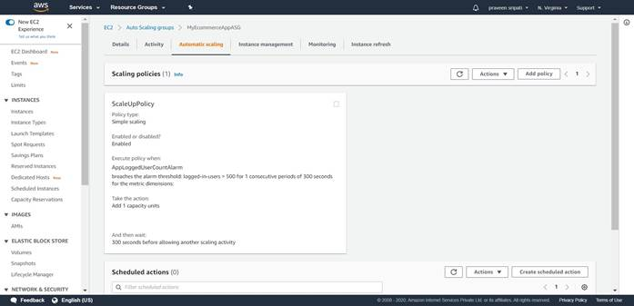
-- Go to the CloudWatch Log groups and delete if there are any, this way we can easily observe a fresh set of logs.
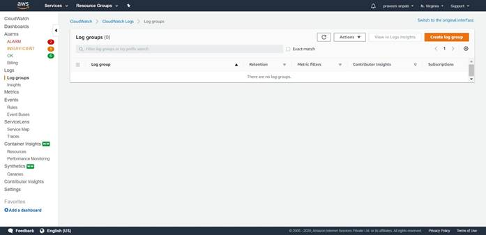
-- In the CloudWatch Rules, make sure the CallLambda-1m-freq is in an active state. This will trigger the Lambda function every minute, which gets the data from the DynamoDB table and send the metrics data to the CloudWatch.
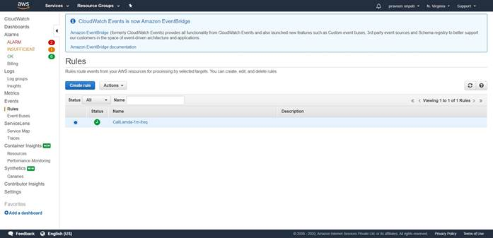
-- Go back to the CloudWatch and it everything has been setup properly till now, we should see a Log groups. Select the Log group.
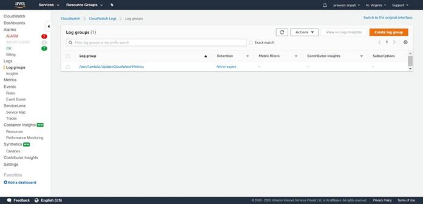
-- Select the Log streams.
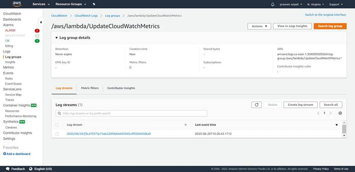
-- We should see the message “Got the metrics from DynamoDB” and “Send the metrics to CloudWatch” in the logs, these are the messages logged by the Lambda function.
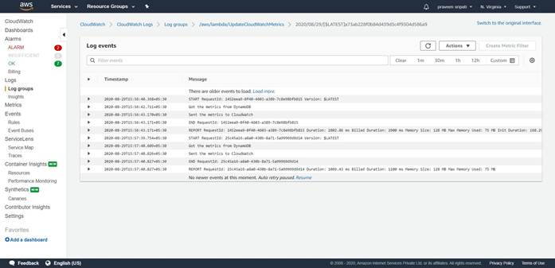
-- Go back to the Alarms in the CloudWatch and notice that the AppLoggedUserCountAlarm will be in a OK state as the metric is less than 500 which is the threshold.
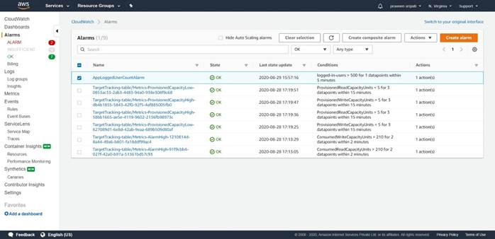
-- Let’s change the value of the logged in users in the DynamoDB table as shown below. Between the commands, make sure to wait for 5 minutes.
Notice that the last command updated the value in the database to 1000 which is more than 500 the threshold and hence the Alarm is triggered and the ASG event will be executed to add an EC2 instance.
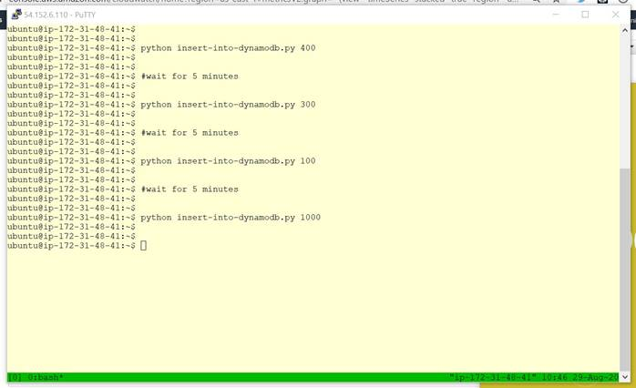
-- In a few minutes notice the graph reflects the same for the custom metric which we have created in the CloudWatch.
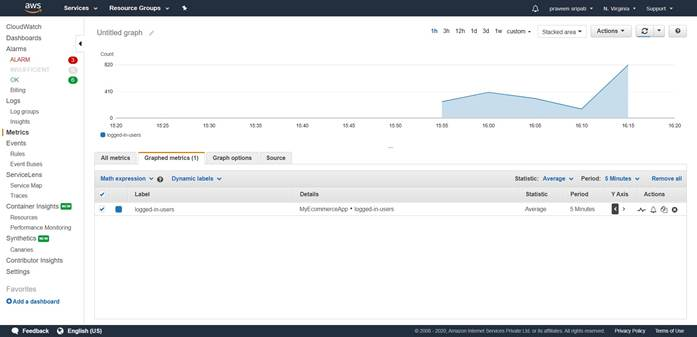
-- The status of the Alarm would change to “In alarm” status within a few minutes as the threshold (500 logged in users) has been breached.
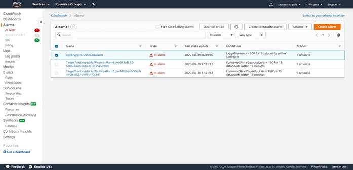
-- The alarm would trigger an ASG action to add another EC2. The same can be observed in the EC2 Management Console. For sake of clarity the EC2 has be named 2 in the below screen.
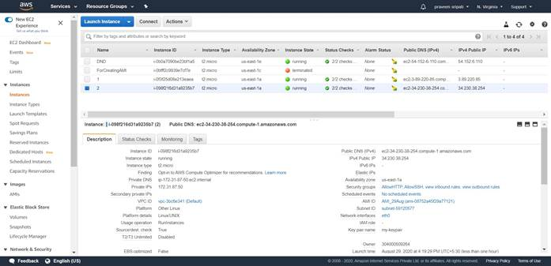
-- The list of EC2 associated with the ASG can also be observed in the “Instance management” tab of the ASG.
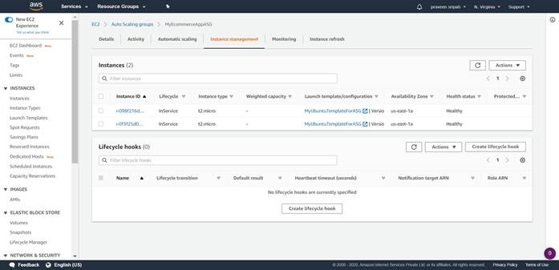
Finally, we have noticed that as the number of users connected to the web application increases, the ASG automatically adds an EC2 instance which allows the load to be balanced across the EC2 instances and so better response time for the application and better customer satisfaction.